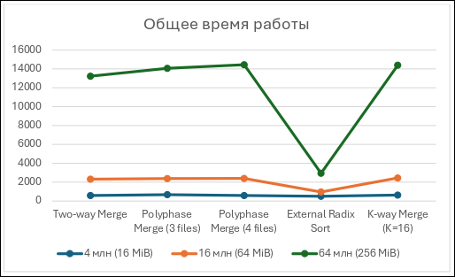

О проекте
В условиях постоянного увеличения объема обрабатываемых данных в системах бизнес-аналитики и хранилищах логов сверхвысокой плотности возникает необходимость эффективной сортировки файлов, размер которых существенно превышает доступный объем ОЗУ.
Цель работы: сравнительный анализ алгоритмов внешней сортировки с точки зрения их эффективности, включая чистую скорость выполнения, пропускную способность дисковой подсистемы и требования к системным ресурсам при блочном вводе-выводе в обход кэша страниц OS.
Исследуемые алгоритмы
В рамках проекта были программно реализованы на C++20 и протестированы 5 алгоритмов двух ключевых классов:
Алгоритмы на основе слияния (Merge-based)
- Two-way External Merge Sort: классическое попарное слияние с чередованием файлов.
- Polyphase Merge Sort (3 и 4 файла): полифазное слияние с распределением серий по числам Фибоначчи.
- K-way Merge Sort (K=16): многопутевое слияние с использованием структуры min-heap для выбора минимума.
- Выбор с замещением (Replacement Selection): вспомогательный алгоритм генерации начальных серий средней длиной ~2M.
Алгоритмы на основе распределения (Distribution-based)
- External Radix Sort: поразрядная сортировка 32-битных ключей за 4 прохода по 8 бит с использованием 256 корзин-буферов без операций сравнения.
Аппаратно-программный стенд
| Параметр | Значение / Характеристика |
|---|---|
| Процессор (CPU) | AMD Ryzen 5 3500U |
| Оперативная память (RAM) | 12 GiB (Буфер алгоритмов строго $M = 4$ MiB) |
| Накопитель (Storage) | NVMe SSD (файловая система ext4) |
| Операционная система | Arch Linux x86_64 |
| Язык и Компилятор | C++20 (GCC / Clang, флаг O_DIRECT) |
Результаты бенчмаркинга (64 млн элементов / 256 MiB)
Ниже приведено сравнение показателей алгоритмов при обработке максимального объема данных (256 MiB) в усредненных условиях (случайные данные) и в худшем сценарии (обратный порядок):

| Алгоритм | Время (Случайные), мс | Пропускная способность, MiB/s | Проходы по диску (Случайные) | Проходы по диску (Reversed) |
|---|---|---|---|---|
| External Radix Sort | 3 247 | 78.8 | 4 | 4 |
| K-way Merge (K=16) | 28 789 | 8.9 | 2 | 2 |
| Two-way Merge | 31 243 | 8.2 | 5 | 6 |
| Polyphase Merge (3 files) | 32 708 | 7.8 | 7 | 9 |
| Polyphase Merge (4 files) | 35 161 | 7.3 | 13 | 17 |
Практические рекомендации
-
Абсолютный лидер по скорости: Для 32-битных целочисленных ключей оптимален
External Radix Sort. Он работает в 3–4 раза быстрее аналогов, стабильно обеспечивая линейную сложность $O(N)$ и не завися от порядка входных данных. -
Минимизация износа SSD: При ограничениях на ресурс записи предпочтителен
K-way Merge (K=16). Благодаря структуре min-heap он требует всего 1–2 прохода по диску, сокращая объем перезаписей в 2.5 раза по сравнению с Two-way Merge. -
Упорядоченные и частично отсортированные массивы: Алгоритмы слияния в сочетании с
выбором с замещениемавтоматически формируют сверхдлинные серии, что сводит дисковую фазу слияния практически к нулю (0–1 проход).